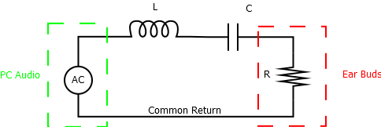

<style>
	player .my-custom-class {color: darkred;}
</style>

<slide-show 
    id="Lab 8: RLC Circuit" 
    author="Thomas.Hemmick@stonybrook.edu" 
    description="You will measure the resonant frequency of an RLC circuit.">

    <chart-container class="col-sm-6 pull-right"></chart-container>   

<!-- ================= Slide 1 ================= -->

	<slide class="col-sm-6">
	
	<h3> Lab 8: RLC Circuit </h3>

	Welcome to the lab on RLC resonant circuits!  The RLC circuit
	plays a central role in nearly all wireless communications
	applications.  In our modern society, we have filled the air
	with many sources of information carried by EM waves,
	including but not limited to radio, television, cellular
	telephone, and wireless internet.  Even your iOLab device
	itself uses EM waves to communicate its measurements to your
	computer.  As such, and simple antenna will be bombarded by
	all these communications and must necessarily list to only
	one.  The RLC circuit exhibits a resonance condition when the
	impedance of the inductor matches that of the capacitor:

	<div class="center" mathjax="\displaystyle{\omega L = \frac{1}{\omega C}}"> </div>

	yielding

	<div class="center" mathjax="\displaystyle{\omega = \frac{1}{\sqrt{L C}}}"> </div>

	or

	<div class="center" mathjax="\displaystyle{f = \frac{1}{2\pi\sqrt{L C}}}"> </div>

	
	In this lab we will be using the audio jack of your computer
	or similar device (<I>e.g.</I> cell phone) as a source of a
	variable frequency to drive "ear buds".  The iOLab will pick
	up the output of the ear buds using the microphone.  By
	intercepting the signal and filtering it with an inductor and
	capacitor, we'll be able to show the effect of a resonant
	circuit and check that the frequency of the resonance changes
	in the expected manner when varying the values of L or C.

	<h4> Objectives </h4>
	<ul>
	<li> To understand how a resonant circuit works.</li>
	<li> To verify the dependence of the resonant frequency on L and C.</li>
	</ul>
	
   <h4> Materials You Will Need </h4>
   <ul>
   <li> 3.5 mm audio extension cable.</li>
   <li> Two 3.5mm audio jack adapters. </li>
   <li> Breadboard. </li>
   <li> Hook up wire(s). </li>
   <li> One 100 milliHenry inductor. </li>
   <li> Two 0.47 microFarad capacitors. </li>
   <li> One 0.22 microFarad capacitor. </li>
   <li> Ear buds, headphones, or other audio listening device.<br> <B>LISTENING DEVICE MUST BE PROVIDED BY STUDENT!</B></li>
   </ul>
   
   <br><br>
   <btn next></btn>
	
	
	</slide>
	
<!-- ================= Slide 2 ================= -->

	<slide class="col-sm-6">
	
	<h3> Lab overview </h3> Today's lab will involve the study of
	AC circuit theory.  AC circuits have similarities and
	differences to DC circuits.  Both deal with relationships
	between voltages and currents.  Both have Laws for which
	voltage is proportional to current.  For DC circuits
	containing resistors:

	<div class="center" mathjax="\displaystyle{V = IR}"> </div>

	and for AC circuits:

	<div class="center" mathjax="\displaystyle{V = IZ}"> </div>

	where Z is the impedance of the circuit element.
	<br><br>
	The aspects the distinguish AC from DC circuits include all the following:
	<ul>
	  <li>The voltages and currents in an AC circuit oscillate
	  both positive and negative.  Therefore, we quantify their strength using
	  either RMS or PEAK values.</li>
	  <li>The voltages and currents in an AC circuit do not all
	  peak at the same time.  Voltages on resistors peak at the
	  same time the current peaks, however, Voltages on inductors
	  peak before the current does and voltages on capacitors peak
	  after the current does.  Therefore every voltage, current,
	  and impedance in an AC circuit has its own unique
	  phase.</li>
	  <li>Passive devices, like resistors, have an impedance that
	  does not vary with frequency.  Active devices like inductors
	  and capacitors have impedances that depend upon
	  frequency.</li>
	  <li>We can correctly account for the difficult math of
	  summing sine waves with varying amplitudes and phases, by
	  performing vector sums of impedances where the magnitude of
	  the vector is the reactance of the device and the direction
	  of the vector is the phase of the impedance.</li>
	</ul>

	The following table summarizes how we deal with R, L, and C using vector or "phasor" math:
<BR>
	<table style="width:100%">
	  <tr>
	    <th>Device</th>
	    <th>Reactance</th> 
	    <th>Arrow</th>
	  </tr>
	  <tr>
	    <td>R</td>
	    <td>R</td> 
	    <td><span class="left-margin" mathjax="\displaystyle {\rightarrow}"> </span></td>
	  </tr>
	  <tr>
	    <td>L</td>
	    <td><span class="left-margin" mathjax="\displaystyle {\omega L}"> </span></td> 
	    <td><span class="left-margin" mathjax="\displaystyle {\uparrow}"> </span></td>
	  </tr>
	  <tr>
	    <td>C</td>
	    <td><span class="left-margin" mathjax="\displaystyle {\frac{1}{\omega C}}"> </span></td> 
	    <td><span class="left-margin" mathjax="\displaystyle {\downarrow}"> </span></td>
	  </tr>
	</table>
	
	<BR> Using the rules of the table above we can use vector
	addition to find the total impedance of a series circuit
	containing a resistor (R), inductor (L), and capacitor (C).
	This result is shown in the figure below:

	<p>  </p>

	Because the impedance of the inductor and capacitor depend upon 
	<span class="left-margin" mathjax="\displaystyle{ \omega
	}"> </span>, the amount of current through the circuit varies
	with frequency.  The largest current happens when the
	impedances of the inductor and capacitor exactly cancel,
	which occurs when:

	<div class="center" mathjax="\displaystyle{\omega L = \frac{1}{\omega C}}"> </div>

	therefore

	<div class="center" mathjax="\displaystyle{\omega = \frac{1}{\sqrt{L C}}}"> </div>

	or

	<div class="center" mathjax="\displaystyle{f = \frac{1}{2\pi\sqrt{L C}}.}"> </div>

	<BR><BR>In today's lab, we will intercept the signal from the
	audio jack of your computer (or cell phone) onto our
	breadboard.  This will allow us to insert an inductor and
	capacitor in series with the headphones (which play the role
	of R).  The result will be a "loudest" frequency, that we will
	observe using the microphone.
	
	  <br><br>
	If you want further review on AC Circuits, you can watch these videos:
	<br><br>
	<div style="position: relative; width: 100%; padding-bottom: 56%; margin-bottom: 10px;" >
	  <iframe style="position: absolute; left: 0; top: 0; width: 100%; height: 100%;" 
		  src="https://www.youtube.com/embed/-avBl4C_fE0" frameborder="0" allowfullscreen>
	  </iframe>
	</div>

	<br><br>
	<div style="position: relative; width: 100%; padding-bottom: 56%; margin-bottom: 10px;" >
	  <iframe style="position: absolute; left: 0; top: 0; width: 100%; height: 100%;" 
		  src="https://www.youtube.com/embed/C7kDX9Q_OFg" frameborder="0" allowfullscreen>
	  </iframe>
	</div>

	<br><br>
	<div style="position: relative; width: 100%; padding-bottom: 56%; margin-bottom: 10px;" >
	  <iframe style="position: absolute; left: 0; top: 0; width: 100%; height: 100%;" 
		  src="https://www.youtube.com/embed/cwWNaVdSfqQ" frameborder="0" allowfullscreen>
	  </iframe>
	</div>

	<br><br>
	<div style="position: relative; width: 100%; padding-bottom: 56%; margin-bottom: 10px;" >
	  <iframe style="position: absolute; left: 0; top: 0; width: 100%; height: 100%;" 
		  src="https://www.youtube.com/embed/Is1LKiEssOw" frameborder="0" allowfullscreen>
	  </iframe>
	</div>

	<br><br>
   <btn next></btn>
	
	
	</slide>
	
<!-- ================= Slide 3 ================= -->

	<slide class="col-sm-6">
	
	  <h3>Audio Setup</h3> To study an AC circuit, we require an AC
	  source.  The trick that we will be using is to tie into the
	  audio output of your PC, cell phone, or other device as a
	  means of generating a variable frequency AC source.  To do
	  this without damaging your ear buds or other audio
	  equipment, we will be using a pair of audio jacks that plug
	  directly into our breadboard.
	  <BR><BR> There are many connections that must all be correct for
	  the circuit to perform as desired.  Fortunately, since we
	  are using an audio source, you will be able to <B>hear</B>
	  whether the connections are good by attempting to listen
	  through the ear buds.  The steps required include:
	  <ul>
	    <li>Making all connections.</li>
	    <li>Listening to an audio source and verifying that it plays through both channels.</li>
	    <li>Determining the "wiring pattern" of the breadboard jacks</li>
	    <ul>
	      <li>Where is the left channel source?</li>
	      <li>Where is the right channel source?</li>
	      <li>Where is the common return connection?</li>
	    </ul>
	    <li>Disabling one channel so that the other channel is the <B>only</B> source of sound for the next part of the lab.</li>
	  </ul>
	  <BR><BR>The video below will help you to complete all these steps and be ready for the final study of the AC circuit.
	
	<br><br>
	<div style="position: relative; width: 100%; padding-bottom: 56%; margin-bottom: 10px;" >
	  <iframe style="position: absolute; left: 0; top: 0; width: 100%; height: 100%;" 
		  src="https://www.youtube.com/embed/ZvrsYs0GT08" frameborder="0" allowfullscreen>
	  </iframe>
	</div>

	<BR><BR> Be certain to record your complete observations about
	the wiring of the audio jack and present your conclusions in
	your lab report.
	
	<br><br>
   <btn next></btn>
	
	
	</slide>
	
<!-- ================= Slide 4 ================= -->

	<slide class="col-sm-6">
	
	  <h3>AC Circuit Setup</h3>  The circuit that we shall study is diagrammed in the figure below.

	<p>  </p>

	In the place of an AC source, we will be using the audio
	output of your PC.  In the place of the resistor, we will be
	using ear buds or headphones.  Nonetheless, this is a standard
	AC resonant circuit for which we expect to have a resonant
	frequency of:

	<div class="center" mathjax="\displaystyle{f = \frac{1}{2\pi\sqrt{L C}}.}"> </div>

	At resonance, the impedance of the circuit is minimum and the
	current through the circuit is maximum.  As a result, we will
	hear the "loudest" response when the frequency of the AC
	source hits the resonant value.  To accomplish this trick, we
	will use
	a website ( http://onlinetonegenerator.com/frequency-sweep-generator.html )
	to make programmable frequency that will sweep from
	below resonance to above resonance.  The microphone jack will
	allow us to spot the moment when the circuit is on resonance
	and using the FFT function we will measure the resonant
	frequency.
	<BR><BR> The video below will show you the wiring necessary to
	complete the circuit as well as the data taking technique.
	
	<br><br>
	<div style="position: relative; width: 100%; padding-bottom: 56%; margin-bottom: 10px;" >
	  <iframe style="position: absolute; left: 0; top: 0; width: 100%; height: 100%;" 
		  src="https://www.youtube.com/embed/flOPPPY99tg" frameborder="0" allowfullscreen>
	  </iframe>
	</div>
	<br>

	<h3>Data Sets</h3> Please complete a measurement of the
	resonant frequency by using all four of the configurations
	described in the table below:
	<br><br>
	<b> Note that for the parallel configurations, you will have to calculate the equivalent capacitance before calculating the resonant frequency. </b>
	<br><br>
	<table style="width:100%">
	  <tr>
	    <th>Inductor</th>
	    <th>Capacitor Config</th>
	    <th>Expected Frequency</th> 
	    <th>Measured Frequency</th>
	  </tr>
	  <tr>
	    <th>100 mH</th>
	    <th>0.47 <span class="left-margin" mathjax="\displaystyle {\mu}"></span> F</th>
	    <th>-</th> 
	    <th>-</th>
	  </tr>
	  <tr>
	    <th>100 mH</th>
	    <th>0.22 <span class="left-margin" mathjax="\displaystyle {\mu}"></span>F</th>
	    <th>-</th> 
	    <th>-</th>
	  </tr>
	  <tr>
	    <th>100 mH</th>
	    <th>Two 0.47 <span class="left-margin" mathjax="\displaystyle {\mu}"></span>F in parallel</th>
	    <th>-</th> 
	    <th>-</th>
	  </tr>
	  <tr>
	    <th>100 mH</th>
	    <th>0.47 <span class="left-margin" mathjax="\displaystyle {\mu}"></span>F in parallel<br> with 0.22 <span class="left-margin" mathjax="\displaystyle {\mu}"></span>F </th>
	    <th>-</th> 
	    <th>-</th>
	  </tr>
	</table>
	
	<br><br>
	You should put a table similar to this one in your lab report. 
	
	
	<br><br>
   <btn next></btn>
	
	
	</slide>
	
<!-- ================= Slide 5 ================= -->

	<slide class="col-sm-6">
	<h3> C = 0.47 <span class="left-margin" mathjax="\displaystyle {\mu}"></span>F </h3>
	
	<code-block>
        <code player-set-fixed-configuration="9"></code>
        <code player-show-chart-sensor="6"></code>
    </code-block>
	
	
	<br><br>
   <btn next></btn>
	
	
	</slide>
	
<!-- ================= Slide 6 ================= -->

	<slide class="col-sm-6">
	<h3> C = 0.22 <span class="left-margin" mathjax="\displaystyle {\mu}"></span>F </h3>
	
	Now change the 0.47 <span class="left-margin" mathjax="\displaystyle {\mu}"></span>F capacitor to the 0.22 
	<span class="left-margin" mathjax="\displaystyle {\mu}"></span>F capacitor.
	
	<code-block>
		<code player-reset-acquisition></code>
        <code player-set-fixed-configuration="9"></code>
        <code player-show-chart-sensor="6"></code>
    </code-block>
	
	
	<br><br>
   <btn next></btn>
	
	
	</slide>
	
<!-- ================= Slide 7 ================= -->

	<slide class="col-sm-6">
	<h3> Two 0.47 <span class="left-margin" mathjax="\displaystyle {\mu}"></span>F Capacitors in Parallel </h3>
	
	Now connect two 0.47 <span class="left-margin" mathjax="\displaystyle {\mu}"></span>F capacitors in parallel to each other. 
	
	<code-block>
		<code player-reset-acquisition></code>
        <code player-set-fixed-configuration="9"></code>
        <code player-show-chart-sensor="6"></code>
    </code-block>
	
	
	<br><br>
   <btn next></btn>
	
	
	</slide>
	
<!-- ================= Slide 7 ================= -->

	<slide class="col-sm-6">
	<h3> A 0.47 <span class="left-margin" mathjax="\displaystyle {\mu}"></span>F capacitor in Parallel with a 0.22 
	<span class="left-margin" mathjax="\displaystyle {\mu}"></span>F capacitor </h3>
	
	Now connect one 0.47 <span class="left-margin" mathjax="\displaystyle {\mu}"></span>F capacitor in parallel to a 
	0.22 <span class="left-margin" mathjax="\displaystyle {\mu}"></span>F capacitor. 
	
	<code-block>
		<code player-reset-acquisition></code>
        <code player-set-fixed-configuration="9"></code>
        <code player-show-chart-sensor="6"></code>
    </code-block>
	
	
	<br><br>
   <btn next></btn>
	
	
	</slide>
	
	
<!-- ================= Slide 9 ================= -->

	<slide class="col-sm-6">
	
	<h3>Final Analysis</h3> Summarize your data by making a plot
	of the expected frequency vs the measured frequency.  Fit the
	data with a linear trend line that requires the intercept be at
	y=0.  Print the equation for the trend line on your plot and
	include the plot in your lab report.  Based upon the plot and
	the slope parameter, draw a conclusion about whether your data
	supports the theory of AC resonant circuits.
	
	<code-block>
		<code player-reset-acquisition></code>
    </code-block>

	  
	</slide>
	
	
	
</slide-show>
